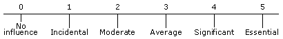
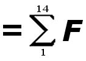
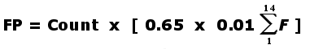
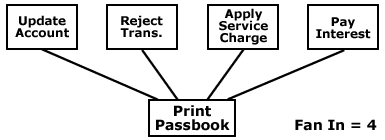
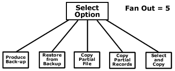

Home >> Software Metrics
Contents
Lines of Code
- Direct measure of size
Advantages
- Easy to count
- Easy to define
- A body of literature
Disadvantages
- It is a hindsight measure
- Is there equality among lines of code?
Defects
- Similar to lines of code as a direct measure
- It has a negative persona
Function Points
- A normalized measure of delivered functionality
Advantages
- Computed rather than measured
- A body of literature
- For those with faith they incorporate complexity, quality, and size
Disadvantages
- Computation domains are not fully standardized
- Hard to define
Back to top
Function Point Computation
Complexity Description Low Medium High Total Inputs ___ x 3 ___ x 4 ___ x 6 ___ Outputs ___ x 4 ___ x 5 ___ x 7 ___ Queries ___ x 3 ___ x 4 ___ x 6 ___ Files ___ x 7 ___ x 10 ___ x 15 ___ Program interfaces ___ x 5 ___ x 7 ___ x 10 ___ COUNT: __________________
- Rate each factor on a scale of 0 to 5:

Fi :
- Does the system require reliable backup and recovery?
- Are data communications required?
- Are there distributed processing functions?
- Is performance critical?
- Will the system run in an existing, heavily utilized operational environment?
- Does the system require on-line data entry?
- Does the on-line data entry require the input transaction to be built over multiple screens or operations?
- Are the master files updated on-line?
- Are the inputs, outputs, files, or inquiries complex?
- Is the code designed to be reusable?
- Is the internal processing complex?
- Are conversion and installation included in the design?
- Is the system designed for multiple installations in different organizations?
- Is the application design to facilitate change and ease of use by the user?
 - 
Estimation Models
Pressman, p.121:
| E = 5.2 x (KLOC)0.91 | Walston-Felix Model |
| E = 5.5 + 0.73 x (KLOC)1.16 | Bailey-Basili Model |
| E = 3.2 x (KLOC)1.05 | Boehm Simple Model |
| E = 5.288 x (KLOC)1.047 | Doty Model for KLOC > 9 |
| FP-oriented models have also been proposed. These include: | |
| E = -13.39 + 0.0545 FP | Albrecht and Gaffney Model |
| E = 60.62 x 7.728 x 10-8 FP3 | Kemerer Model |
| E = 585.7 + 15.12 FP | Matson, Barnett, and Mellichamp Model |
Design Metrics
-
Coupling - measure of the dependance of modules on one and other. Generally you design to minimize coupling. There are many kinds of coupling:
- Data Coupling: Variable Passing
- Stamp Coupling: Record Passing
- Control Coupling: Control Flags
- Common Coupling: Global Variables
- Content Coupling: Control Flags
-
Cohesion - measure of the focus upon one (or more) functions. Generally you design to mazimize cohesion (sharpen focus). The following scale shows six classes of cohesion from preferred to less preferred:
- Functional Cohesion - all code pertains to one function
- Sequential Cohesion - a single thread of sub functions all pertaining to one function. Execution order is important.
- Communications Cohesion - several functions operate on the same data. The functions can be executed in any order.
- Procedural Cohesion - a single thread of several functions using different data.
- Temporal Cohesion - several functions operate on a variety of data in any order.
- Coincidental Cohesion - no relationship among functions, data and execution order.
-
Fan-In - is the number of parent (immediately previously executed) modules that a module has.
 Rule of Thumb- maximize Fan-In
-
Fan-Out - is the number of children (immediately executed afterwards) modules that a module has.
 Rule of Thumb (especially top-down)- minimize Fan-Out
- Fan-Out should not exceed 7